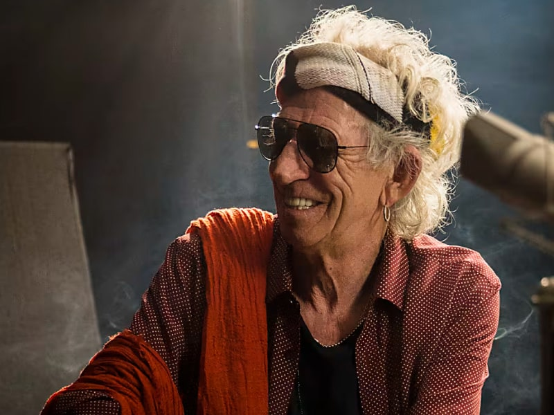
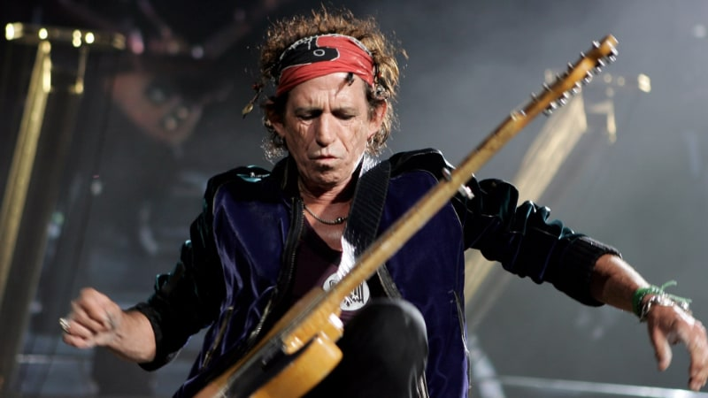
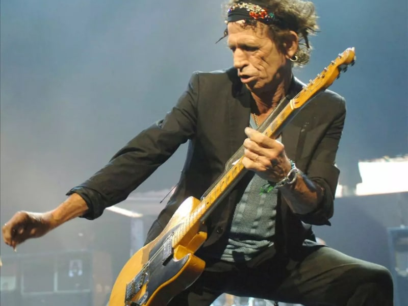
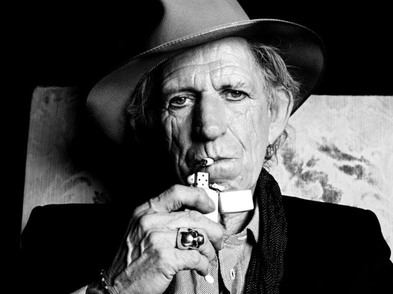

Interviews
Open G tuning: Keith Richards' secret weapon
Jérôme Coupé

On many of the Rolling Stones' greatest hits Keith Richards played in Open G tuning. Often he has the lowest string removed, so that he plays a five string guitar. Keith's guitar playing is not about fancy or lightning fast playing with impressive technique. It's about great riffs, infectious groove and timeless songwriting.
Within seconds of walking into the room, Keith Richards has put your correspondent at ease with the simplest of salutations. Shorter than you'd expect him to be, his presence takes up all the available space and it's impossible not to warm to a demeamour that suggests a man who is completely at ease with himself while loving the fact that he's Keith Richards.
His handshake is firm and his smile is wide. His stick thin legs are encased in black jeans while the black shirt that covers his torso is undone to a degree that it reveals his bare chest and a variety of necklaces and jewelry. The bandana on his head barely conceals the shock of white hair that shoots in all directions, resembling as it does the result of a Looney Tunes cartoon explosion, while the deep lines on his tanned face are as likely the result of smiling with the phlegmy laughter that he emits with an endearing regularity as the increase in years.
"We're born to have fun. If you take it too seriously, you're fucked ..."
Once upon a time, it was what Richards might have been smoking that would've raised eyebrows but now, in these health conscious times, the ashtray placed on the table in front of us will suffice for an act of mild rebellion as cigarettes are lit and enjoyed indoors. "Keith's old school," his PR says with a palpable sense of pride.
He's certainly not like any 71-year-old that people of my generation grew up with. Those were people who'd lived through world wars and unimaginable hardship. But then again, in addition to be being part of the boomer generation, Keith Richards is a true original who, in a major way, helped change, shape and define popular culture in a way that so few can actually claim to have done. And while celebrity culture has increased as it comes to take on ever more ridiculous forms of banality, it rarely arrives with the kind of talent that makes an impact the way that Richards and his cohorts in The Rolling Stones have done.

We're talking in a suite in the Savoy that overlooks the Thames and beyond it, south London. We're a stone's throw and lifetime away from Edith Grove in Chelsea where the young Richards, Mick Jagger and Brian Jones lived in mythical squalor and poverty in 1962 as they dedicated themselves to a relatively obscure form of music that would be given a new lease of life in their fretting and strumming hands. With Richards long departed from these shores, does his return to the capital feel like a return home or is it more like passing through a town in which he lived?
"A bit of both, actually," says Richards, exhaling smoke. "I've watched the town change all around me what with all the new architecture and new looks. But this is a great view from here. But hey, London; I love the town but it's always been changing since the Romans stuck it on! I mean, nothing stays the same; I just like to watch the changes. But they could get rid of the National Theatre though because it's one of the ugliest dens in the world. But what goes on inside is probably more important than the look of the building, hurgh, hurgh!"


Richards is here as he prepares to release his third solo album, Crosseyed Heart, and it's his first in 23 years. Its inception goes back five years and the album finds Richards revisiting the many styles of music that he's lent his hand to over the decades: country blues, rock & roll, soul and reggae. With an impressive cast of characters joining him for the ride, Crosseyed Heart sees contributions from drummer and producer Steve Jordan, Ivan and Aaron Neville, Spooner Oldham and Norah Jones among others, as well as fellow hell-raiser and Stones saxophonist, the late Bobby Keys. Yet given how long the Stones have been together and the volume of extra-curricular activities by his band mates, it does seem strange that this is just Richards' third solo outing. Why so few and why now?